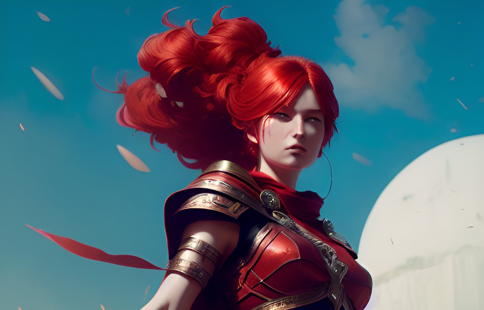
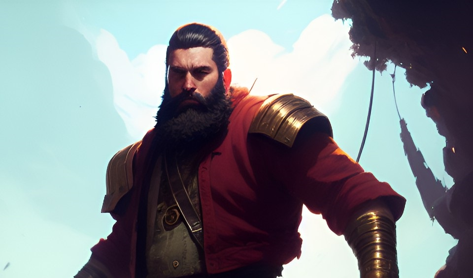
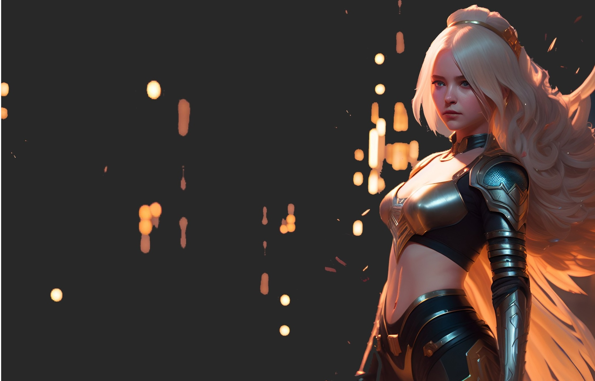
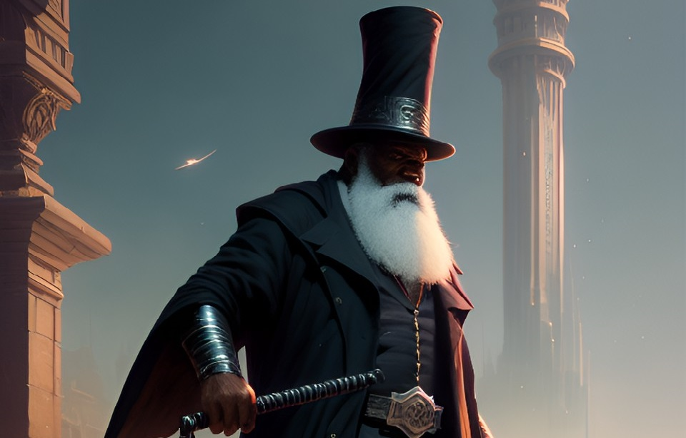

|  |
- Nombre: Jan Lin
- Edad: 24 años
- Origen: Tierras Altas
- Historia: Jan Lin es una joven y talentosa aprendiz de maga que vive en una pequeña aldea al borde del bosque. Su mentor, el anciano mago Hanzo, le ha enseñado todo lo que sabe sobre el manejo de la magia del fuego, pero Jan Lin siente que aún le queda mucho por aprender.
Sin embargo, su vida da un giro inesperado cuando una extraña enfermedad comienza a afectar a los habitantes de su aldea.
|
- Nombre:Sebastian
- Edad:30 años
- Origen:Whiteriver
- Historia: A diferencia de otros personajes de la saga, Sebastián no tiene habilidades sobrenaturales ni ha sido entrenado en el combate, sino que es un simple granjero que trabaja duro para mantener a su familia.
Su vida cambiará drásticamente cuando su pequeña comunidad es atacada por un grupo de demonios. A pesar de su falta de habilidades, luchará valientemente, haciéndo que la gente le empiece a ver como un líder.
|
 |
|  |
- Nombre:Iluma
- Edad:Indefinida
- Origen:Isla Prohibida
- Historia: A pesar de su inmortalidad, Iluma parece joven y hermosa, y su habilidad para controlar la magia es impresionante. Ha pasado siglos explorando la Isla Prohibida y aprendiendo sus secretos.
Es una figura misteriosa y enigmática, y su lealtad no siempre estará clara. A menudo se muestra indiferente a las preocupaciones de los seres humanos y parece estar más interesada en mantener el equilibrio mágico del mundo que en ayudar a los mortales en su lucha contra los demonios.
A pesar de ello, su conocimiento y habilidades serán esenciales para la lucha contra las fuerzas oscuras.
|
- Nombre: Hanzo
- Edad:72 años
- Origen:Tierras Altas
- Historia: El anciano entrenador tiene que confiar en las habilidades de su novata aprendiz y ayudarle todo lo que sea posible, ya que sobre sus hombros ha caído una pesada carga de la que no está seguro sea capaz de soportar.
|
 |